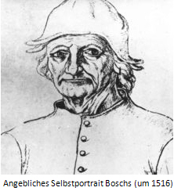

Die deutsche Version dieser Homepage finden Sie unter fhab.de Die deutsche Version dieser Homepage finden Sie unter fhab.de |
| |
|
The Pictorial Symbols in the Paintings of Hieronymus Bosch

The pictorial language of the Rosicrucian, Hieronymus van Aken, known as Bosch (1450-1516), already expressed the pathway and guidance inherent in Christian knowledge in his essential works during his lifetime.
His paintings are Imaginations of actuality condensed to physical expression. Bosch possessed first-hand knowledge of the history of the human being from the Fall of Mankind until the fully developed faculties of conscious spiritual perception. As a painter he lives at the inauguration of the development of the powers of consciousness of the soul; the age of the Consciousness Soul (1513). His Rosicrucian insights into the actual spiritual relationships are placed between Protestantism (Luther 1483-1546) – whose influence resulted in a dilution of living Christianity – and a stream that calls itself „Societa Jesu“ (Ignatius von Loyola 1491-1556), whose spiritual exercises claim to teach the path of Imitation of the Christ.
Through Bosch the body of powers (“der Kräfteleib”) of Christian Rosenkreutz worked, as he gave form and portrayal to the path of development since the fall of the soul and also that of the soul’s development, in his paintings. His imaginative powers point toward the future if one is able to decipher them. To this end the anthroposophist C. A. Wertheim-Aymes (20th century) has given an essential contribution.
For a comprehensive view of his work Bosch stands in front of mankind as a guide to its tasks in the 5th post-Atlantean cultural age. His work comprises the supersensible as well as the subsensible world. His work is demanding for human beings requiring extensive knowledge. His world historic consequence as also his clarity and power of representation surpasses those of the Platonists and the Aristotelians in spiritual significance. Both groups - who in later incarnations entered the Cistercian and Dominican Orders and for whose development in their incarnations in the 20th century Steiner provided the contents of Anthroposophy - have been depicted by Bosch in their one-sidedness.
The Imaginations of actuality of Bosch glow from his inimitable pictures about 500 years before our time during the time of the Inquisition with its contempt and destruction of human life called into being and executed by the Orders of the Roman Church at hand of their selfmade “Rights toward the education of the human race”. Bosch also painted this litter. It was only in our time that Rudolf Steiner (1861- 1925) in his “Occult Science – an Outline” (1910) again presented the evolution of the world, the creation and the becoming of the human being in clarity of thought. Bosch had to distribute this knowledge in his various Triptychs due to the Inquisition.
It cannot pass unmentioned that the lack of adequate schooling of their soulfaculties by the Aristotelians as well as the Platonists prevented the truly Christian streams – especially that of the Rosicrucians, but also the one Bosch symbolically presented as the Grailstream – from becoming active in the guidance of worldhistory to the present day.
If one views the pictorial motives in the Triptychs, or part of these, with knowledge of the phases of world evolution and human evolution gained from spiritual science, then one will recognize in the paintings, but also in Bosch himself, the actual and intrinsic representative of the development of the soulforces demanded by the Timespirit, namely the Consciousness Soul and the foundations towards Manasconsciousness.
New Release

» Details
» zum Verlag